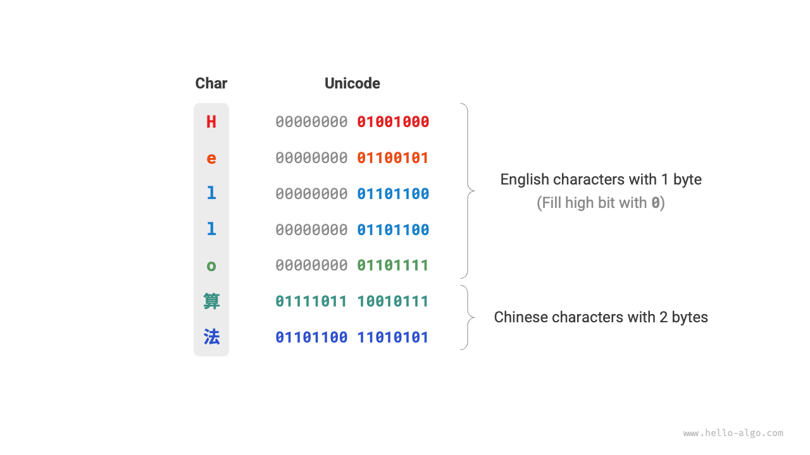
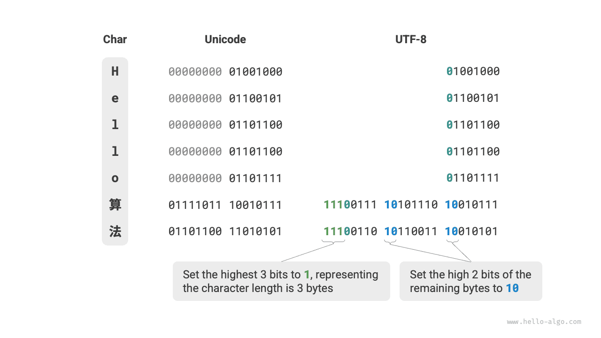

Mã hóa ký tự *¶
Trong máy tính, tất cả dữ liệu được lưu trữ ở dạng nhị phân và ký tự char cũng không ngoại lệ. Để biểu diễn các ký tự, chúng ta cần thiết lập một "bộ ký tự" xác định sự tương ứng một-một giữa mỗi ký tự và số nhị phân. Với bộ ký tự, máy tính có thể chuyển đổi số nhị phân thành ký tự bằng cách tra cứu bảng.
Bộ ký tự ASCII¶
ASCII code is the earliest character set, with the full name American Standard Code for Information Interchange. It uses 7 binary bits (the lower 7 bits of one byte) to represent a character, and can represent a maximum of 128 different characters. As shown in the figure below, ASCII code includes uppercase and lowercase English letters, numbers 0 ~ 9, some punctuation marks, and some control characters (such as newline and tab).

Tuy nhiên, mã ASCII chỉ có thể đại diện cho tiếng Anh. Với sự toàn cầu hóa của máy tính, một bộ ký tự có tên EASCII có thể đại diện cho nhiều ngôn ngữ hơn đã xuất hiện. Nó mở rộng từ cơ sở 7 bit của ASCII lên 8 bit và có thể biểu thị 256 ký tự khác nhau.
Trên toàn thế giới, hàng loạt bộ ký tự EASCII phù hợp với các vùng miền khác nhau đã liên tiếp xuất hiện. 128 ký tự đầu tiên của các bộ ký tự này được hợp nhất thành mã ASCII và 128 ký tự cuối cùng được xác định khác nhau để thích ứng với nhu cầu của các ngôn ngữ khác nhau.
Bộ ký tự GBK¶
Sau này người ta phát hiện ra rằng EASCII vẫn không thể cung cấp đủ ký tự cho nhiều ngôn ngữ. Ví dụ, có gần một trăm nghìn ký tự Trung Quốc và vài nghìn ký tự được sử dụng trong cuộc sống hàng ngày. Năm 1980, Cục Tiêu chuẩn Quốc gia Trung Quốc phát hành bộ ký tự GB2312, bao gồm 6.763 ký tự tiếng Trung, cơ bản đáp ứng nhu cầu xử lý máy tính cho tiếng Trung.
Tuy nhiên, GB2312 không thể xử lý một số ký tự hiếm và ký tự phồn thể của Trung Quốc. Bộ ký tự GBK là phần mở rộng dựa trên GB2312, bao gồm tổng cộng 21.886 ký tự tiếng Trung. Trong sơ đồ mã hóa GBK, các ký tự ASCII được biểu diễn bằng một byte và các ký tự tiếng Trung được biểu diễn bằng hai byte.
Bộ ký tự Unicode¶
Với sự phát triển mạnh mẽ của công nghệ máy tính, bộ ký tự và tiêu chuẩn mã hóa phát triển mạnh mẽ, kéo theo nhiều vấn đề. Một mặt, các bộ ký tự này thường chỉ xác định ký tự cho các ngôn ngữ cụ thể và không thể hoạt động bình thường trong môi trường đa ngôn ngữ. Mặt khác, tồn tại nhiều tiêu chuẩn bộ ký tự cho cùng một ngôn ngữ và nếu hai máy tính sử dụng các tiêu chuẩn mã hóa khác nhau, các ký tự bị cắt xén sẽ xuất hiện trong quá trình truyền thông tin.
Các nhà nghiên cứu thời đó đã nghĩ: Nếu một bộ ký tự đủ hoàn chỉnh được phát hành để bao gồm tất cả các ngôn ngữ và ký hiệu trên thế giới, liệu điều đó có giải quyết được các vấn đề trong môi trường đa ngôn ngữ và loại bỏ văn bản bị cắt xén không? Được thúc đẩy bởi ý tưởng này, một bộ ký tự lớn và toàn diện, Unicode, đã ra đời.
Unicode, or Unified Code, can theoretically accommodate over one million characters. It is committed to including characters from around the world into a unified character set, providing a universal character set to handle and display various language texts, reducing garbled character problems caused by different encoding standards. Since its release in 1991, Unicode has continuously expanded to include new languages and characters. As of September 2022, Unicode has included 149,186 characters, including characters, symbols, and even emojis from various languages.
Là một bộ ký tự phổ quát, về cơ bản Unicode gán cho mỗi ký tự một "điểm mã" duy nhất (mã định danh ký tự), có phạm vi từ U+0000 đến U+10FFFF, tạo thành một không gian đánh số ký tự thống nhất. Tuy nhiên, Unicode không chỉ định cách lưu trữ các điểm mã ký tự này trong máy tính. Chúng tôi không thể không hỏi: khi các điểm mã Unicode có nhiều độ dài xuất hiện đồng thời trong một văn bản, hệ thống phân tích các ký tự như thế nào? Ví dụ: với một mã hóa có độ dài 2 byte, hệ thống xác định xem đó là một ký tự 2 byte hay hai ký tự 1 byte?
Đối với vấn đề trên, một giải pháp đơn giản là lưu trữ tất cả các ký tự dưới dạng mã hóa có độ dài bằng nhau. Như minh họa trong hình bên dưới, mỗi ký tự trong "Xin chào" chiếm 1 byte và mỗi ký tự trong "算法" (thuật toán) chiếm 2 byte. Chúng ta có thể mã hóa tất cả các ký tự trong "Xin chào 算法" có độ dài 2 byte bằng cách đệm các bit cao bằng 0. Bằng cách này, hệ thống có thể phân tích cú pháp một ký tự cứ sau 2 byte và khôi phục nội dung của cụm từ này.

Tuy nhiên, mã ASCII đã chứng minh cho chúng ta thấy rằng việc mã hóa tiếng Anh chỉ cần 1 byte. Nếu sơ đồ trên được áp dụng, kích thước của văn bản tiếng Anh sẽ gấp đôi so với mã hóa ASCII, điều này rất lãng phí dung lượng bộ nhớ. Vì vậy, chúng ta cần một phương pháp mã hóa Unicode hiệu quả hơn.
Mã hóa UTF-8¶
Hiện nay, UTF-8 đã trở thành phương pháp mã hóa Unicode được sử dụng rộng rãi nhất trên thế giới. Đây là mã hóa có độ dài thay đổi sử dụng 1 đến 4 byte để biểu thị một ký tự, tùy thuộc vào độ phức tạp của ký tự. Ký tự ASCII chỉ yêu cầu 1 byte, chữ cái Latinh và Hy Lạp yêu cầu 2 byte, ký tự tiếng Trung thông dụng yêu cầu 3 byte và một số ký tự hiếm khác yêu cầu 4 byte.
Quy tắc mã hóa của UTF-8 không phức tạp và có thể chia thành hai trường hợp sau.
- Đối với ký tự 1 byte, đặt bit cao nhất là \(0\) và đặt 7 bit còn lại thành điểm mã Unicode. Điều đáng chú ý là các ký tự ASCII chiếm 128 điểm mã đầu tiên trong bộ ký tự Unicode. Điều đó có nghĩa là mã hóa UTF-8 tương thích ngược với mã ASCII. Điều này có nghĩa là chúng ta có thể sử dụng UTF-8 để phân tích văn bản mã ASCII rất cũ.
- Đối với các ký tự có độ dài \(n\) byte (trong đó \(n > 1\)), đặt bit \(n\) cao nhất của byte đầu tiên thành \(1\), và đặt bit thứ \((n + 1)\)-th thành \(0\); bắt đầu từ byte thứ hai, đặt 2 bit cao nhất của mỗi byte thành \(10\); sử dụng tất cả các bit còn lại để điền vào điểm mã Unicode của ký tự.
Hình bên dưới hiển thị mã hóa UTF-8 tương ứng với "Xin chào 算法". Có thể thấy rằng vì các bit \(n\) cao nhất đều được đặt thành \(1\), nên hệ thống có thể xác định rằng độ dài ký tự là \(n\) bằng cách đếm các bit \(1\) đứng đầu.
Nhưng tại sao lại đặt 2 bit cao nhất của tất cả các byte khác thành \(10\)? Trên thực tế, \(10\) này có thể đóng vai trò là biểu tượng séc. Giả sử hệ thống bắt đầu phân tích cú pháp văn bản từ một byte không chính xác, \(10\) ở đầu byte có thể giúp hệ thống nhanh chóng xác định điểm bất thường.
Lý do sử dụng \(10\) làm ký hiệu kiểm tra là theo quy tắc mã hóa UTF-8, hai bit cao nhất của ký tự không thể là \(10\). Kết luận này có thể được chứng minh bằng mâu thuẫn: giả sử hai bit cao nhất của một ký tự là \(10\) thì độ dài của ký tự là \(1\), tương ứng với mã ASCII. Tuy nhiên, bit cao nhất của mã ASCII phải là \(0\), điều này mâu thuẫn với giả định.

Ngoài UTF-8, các phương pháp mã hóa phổ biến còn bao gồm hai phương pháp sau.
- Mã hóa UTF-16: Sử dụng 2 hoặc 4 byte để biểu thị một ký tự. Tất cả các ký tự ASCII và các ký tự không phải tiếng Anh thường được sử dụng đều được biểu thị bằng 2 byte; một vài ký tự cần sử dụng 4 byte. Đối với các ký tự 2 byte, mã hóa UTF-16 bằng điểm mã Unicode.
- Mã hóa UTF-32: Mỗi ký tự sử dụng 4 byte. Điều này có nghĩa là UTF-32 chiếm nhiều không gian hơn UTF-8 và UTF-16, đặc biệt đối với văn bản có tỷ lệ ký tự ASCII cao.
Từ góc độ chiếm dụng không gian lưu trữ, việc sử dụng UTF-8 để thể hiện các ký tự tiếng Anh rất hiệu quả vì chỉ yêu cầu 1 byte; sử dụng bảng mã UTF-16 cho một số ký tự không phải tiếng Anh (như tiếng Trung) sẽ hiệu quả hơn vì chỉ yêu cầu 2 byte, trong khi UTF-8 có thể yêu cầu 3 byte.
Từ góc độ tương thích, UTF-8 có tính phổ quát tốt nhất và nhiều công cụ và thư viện hỗ trợ UTF-8 trước tiên.
Mã hóa ký tự trong ngôn ngữ lập trình¶
Đối với nhiều ngôn ngữ lập trình trước đây, các chuỗi trong quá trình thực thi chương trình đã sử dụng các mã hóa nội bộ như UTF-16 hoặc UTF-32. Theo các cách biểu diễn này, chúng ta thường có thể xử lý các chuỗi giống như mảng trong quá trình xử lý và cách tiếp cận này có những ưu điểm sau.
- Truy cập ngẫu nhiên: Các chuỗi được mã hóa UTF-16 có thể dễ dàng truy cập ngẫu nhiên. UTF-8 là mã hóa có độ dài thay đổi. Để tìm ký tự \(i\)-th, chúng ta cần duyệt từ đầu chuỗi đến ký tự \(i\)-th, yêu cầu thời gian \(O(n)\).
- Đếm ký tự: Tương tự như truy cập ngẫu nhiên, việc tính toán độ dài của chuỗi được mã hóa UTF-16 cũng là một thao tác \(O(1)\). Tuy nhiên, việc tính toán độ dài của chuỗi được mã hóa UTF-8 yêu cầu phải duyệt qua toàn bộ chuỗi.
- Thao tác chuỗi: Nhiều thao tác chuỗi (như tách, nối, chèn, xóa, v.v.) trên chuỗi được mã hóa UTF-16 dễ thực hiện hơn. Việc thực hiện các thao tác này trên chuỗi được mã hóa UTF-8 thường yêu cầu tính toán bổ sung để đảm bảo rằng mã hóa UTF-8 không hợp lệ không được tạo ra.
Trên thực tế, việc thiết kế sơ đồ mã hóa ký tự cho ngôn ngữ lập trình là một chủ đề rất thú vị liên quan đến nhiều yếu tố.
- Kiểu
Stringcủa Java sử dụng bảng mã UTF-16, mỗi ký tự chiếm 2 byte. Điều này là do khi bắt đầu thiết kế ngôn ngữ Java, mọi người tin rằng 16 bit là đủ để biểu diễn tất cả các ký tự có thể có. Tuy nhiên, đây là một phán đoán sai lầm. Sau đó, đặc tả Unicode đã mở rộng ra ngoài 16 bit, do đó, các ký tự trong Java hiện có thể được biểu thị bằng một cặp giá trị 16 bit (được gọi là "cặp thay thế"). - Các chuỗi JavaScript và TypeScript sử dụng bảng mã UTF-16 với lý do tương tự như Java. Khi Netscape lần đầu tiên giới thiệu ngôn ngữ JavaScript vào năm 1995, Unicode vẫn đang trong giai đoạn phát triển ban đầu và vào thời điểm đó, việc sử dụng mã hóa 16 bit là đủ để thể hiện tất cả các ký tự Unicode.
- C# sử dụng bảng mã UTF-16 chủ yếu vì nền tảng .NET được thiết kế bởi Microsoft và nhiều công nghệ của Microsoft (bao gồm cả hệ điều hành Windows) sử dụng rộng rãi bảng mã UTF-16.
Do các ngôn ngữ lập trình trên đánh giá thấp số lượng ký tự nên họ phải áp dụng phương pháp “cặp thay thế” để biểu diễn các ký tự Unicode có độ dài vượt quá 16 bit. Đây là một sự thỏa hiệp miễn cưỡng. Một mặt, trong các chuỗi chứa các cặp thay thế, một ký tự có thể chiếm 2 byte hoặc 4 byte, do đó làm mất đi lợi thế của mã hóa có độ dài cố định. Mặt khác, việc xử lý các cặp thay thế đòi hỏi phải có thêm mã, điều này làm tăng độ phức tạp và khó khăn trong việc gỡ lỗi trong lập trình.
Vì những lý do trên, một số ngôn ngữ lập trình đã đề xuất các sơ đồ mã hóa khác nhau.
strcủa Python sử dụng mã hóa Unicode và áp dụng cách biểu diễn chuỗi linh hoạt trong đó độ dài ký tự được lưu trữ phụ thuộc vào điểm mã Unicode lớn nhất trong chuỗi. Nếu tất cả các ký tự trong chuỗi đều là ký tự ASCII thì mỗi ký tự chiếm 1 byte; nếu có các ký tự vượt quá phạm vi ASCII nhưng tất cả đều nằm trong Mặt phẳng đa ngôn ngữ cơ bản (BMP), thì mỗi ký tự chiếm 2 byte; nếu có ký tự vượt quá BMP thì mỗi ký tự chiếm 4 byte.- Kiểu
chuỗicủa ngôn ngữ Go sử dụng mã hóa UTF-8 nội bộ. Ngôn ngữ Go cũng cung cấp loạirune, được sử dụng để biểu thị một điểm mã Unicode duy nhất. - Kiểu
strvàStringcủa ngôn ngữ Rust sử dụng mã hóa UTF-8 nội bộ. Rust cũng cung cấp kiểucharđể biểu diễn một điểm mã Unicode duy nhất.
Cần lưu ý rằng cuộc thảo luận ở trên là về cách các chuỗi được lưu trữ trong ngôn ngữ lập trình, khác với cách các chuỗi được lưu trữ trong tệp hoặc truyền qua mạng. Trong việc lưu trữ tệp hoặc truyền qua mạng, chúng tôi thường mã hóa chuỗi thành định dạng UTF-8 để đạt được khả năng tương thích và hiệu quả không gian tối ưu.